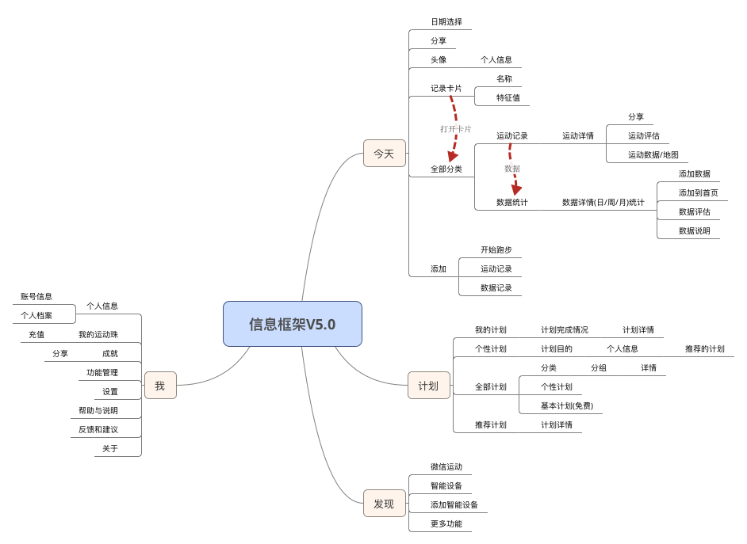

功能需求和解决方案

说明
通过用户调研, 需求分析, 和可用性测试结果
数据需求:
查看自己的运动统计情况, 并有参照评估
运动完成后可以记录, 直观查看, 方便统计比对, 分享
获得运动资讯, 方法
获得运动场地信息
运动装备, 健康设备信息
功能需求:
精确记录跑步数据
记录数据, 地图
分享
连接智能设备
制定计划, 督促完成
情景需求:
夜间跑步模式
跑步记录可以暂停
急救情况
业务需求:
推广
反馈
可用
活跃
解决方案:
* 可用性
* 运动珠系统
* 夜间模式
* 急救卡功能
* 截屏分享
* 以卡片的形式展示内容
* 快捷添加数据
* 设置反馈入口
信息架构图: 如右
